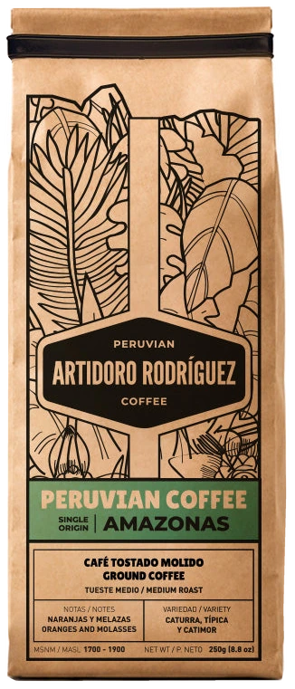
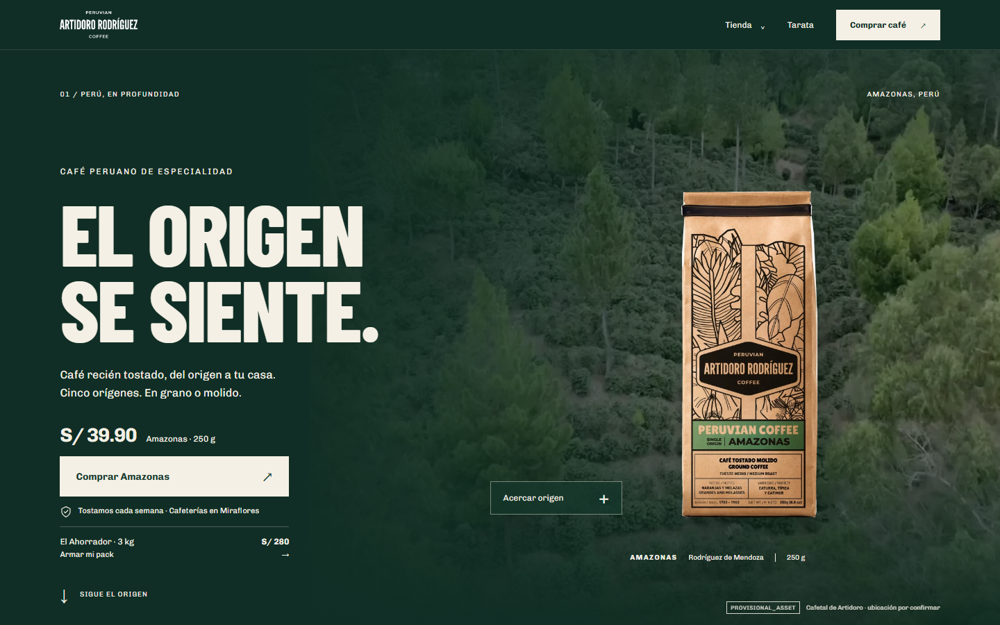
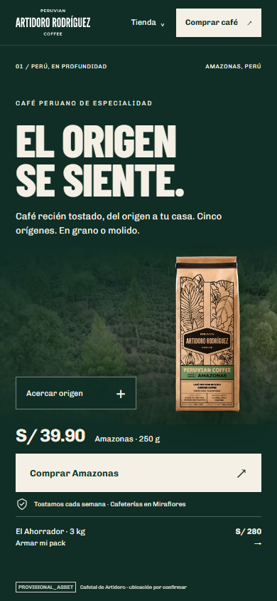
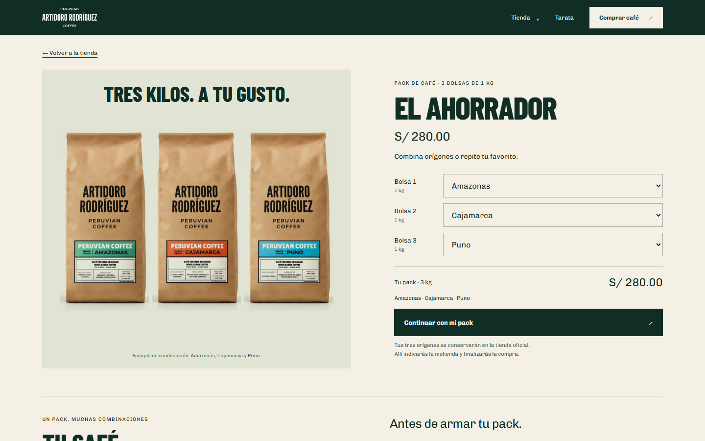
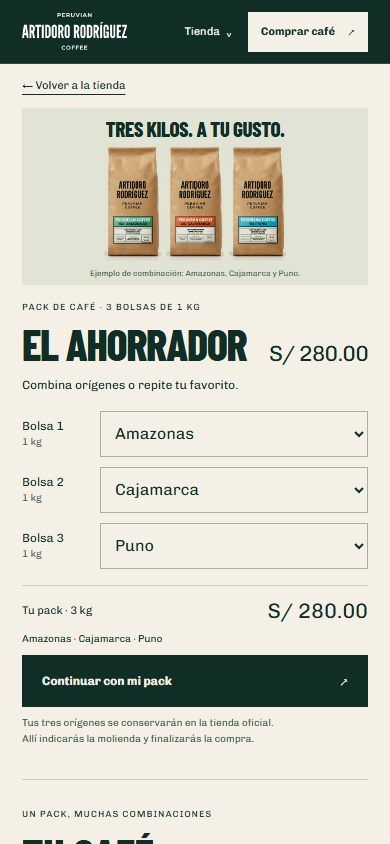
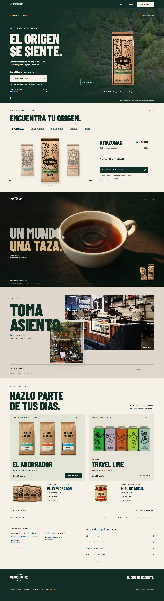
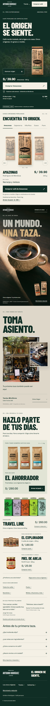
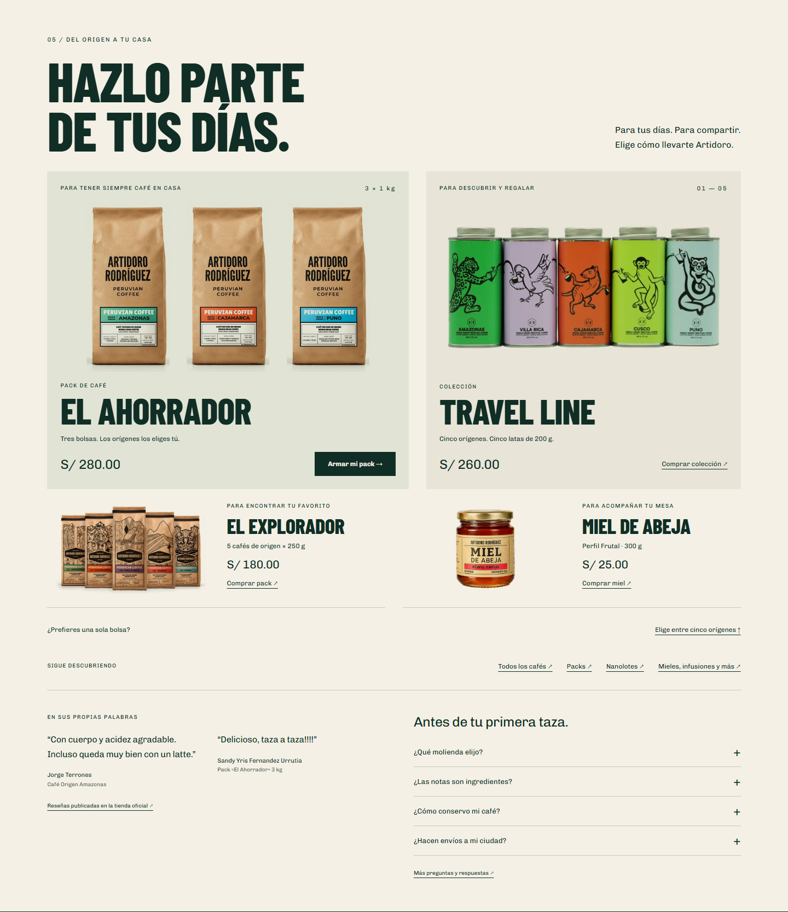

Tienda online · Propuesta
Artidoro Rodríguez · Dirección A
Perú, en
profundidad.
Una propuesta para que la tienda online cuente el origen y venda al mismo tiempo.

La idea
Lo más difícil
ya lo tienen.
Café de cinco orígenes peruanos, un empaque con personalidad y una cafetería de verdad en Tarata. La propuesta: que la tienda online cuente esa historia y venda al mismo tiempo.
- 01PresenciaCafé, precio y compra desde la primera pantalla.
- 02ElecciónCinco orígenes, de uno en uno.
- 03DeseoUn momento para el antojo.
- 04CercaníaTarata, un lugar real.
- 05CompraUn cierre ordenado.
PackEl Ahorrador, a mano desde la primera pantalla, desde los orígenes y desde el cierre.
Revisión de su tienda
Buena base.
Espacio para crecer.
Lo que ya tienen
- Envío gratis desde S/ 110, anunciado arriba de la página.
- Precios con ahorro a la vista en colecciones y en la ficha del pack.
- Mensajes claros: tostado cada semana, envíos a todo el Perú.
- Reseñas de clientes y preguntas frecuentes en la home.
- La ficha del pack explica cómo armarlo.
Dónde hay espacio
- Primera pantalla: la marca se luce, pero producto, precio y compra llegan al desplazarse.
- Colecciones: abren con imagen y texto; los productos empiezan más abajo.
- Ficha del pack en celular: el botón de compra llega tras quince selectores, sin envío, cambios ni calificación al lado.
- Velocidad en celular: la mediremos al empezar, como punto de partida.
Revisión propia de su tienda el 29.09.2026, en computadora (1440 px) y celular (390 px), sin llegar al carrito.
La estrategia · conversión: que más visitas terminen en compra
Del antojo
al carrito.
Cada parte de la demo responde a un momento de la compra. Lo que falta, lo sumaríamos al llevarla a su tienda.
Son decisiones de diseño que se miden, no resultados prometidos.
Parada 1 · 01 / Presencia
Palanca · Claridad
Marca y compra en la misma pantalla.
Lo que se ve
- El café, su precio y el botón de compra desde el primer momento.
- «Acercar origen» para quien quiere saber más.
- El Ahorrador, visible debajo.
Por qué importa
Quien llega desde un anuncio o desde Instagram necesita entender qué se vende y cuánto cuesta, sin buscar.
Ver en la demo ↗

Capturas de la demo · 1440 y 390 px de ancho · 28.09.2026
Parada 2 · El Ahorrador
Palanca · El pack
Tres bolsas.
Tú eliges.
Lo que se ve
- Se abre desde la primera pantalla, desde los orígenes y desde el cierre.
- Tres bolsas de 1 kg: mezclar orígenes o repetir el favorito.
- La combinación y el total, siempre a la vista.
Por qué importa
Es una compra de S/ 280: conviene que quede muy clara antes de pagar.
La foto es un ejemplo de combinación, hecho con fotos reales de las bolsas de 1 kg.
Ver en la demo ↗

Capturas de la demo · 1440 y 390 px de ancho · 28.09.2026
Parada 3 · 02 / Elección
Palanca · Elección
Cinco orígenes, sin abrumar.
Lo que se ve
- Un origen a la vez: región, nota en taza, precio y compra.
- Elegir uno no cambia el resto de la página.
- El pack sigue a mano.
Por qué importa
Ayudar a elegir a quien no conoce las regiones, sin ponerle todas las opciones a la vez.
Ver en la demo ↗

Capturas de la demo · 1440 y 390 px de ancho · 28.09.2026
Parada 4 · 03 y 04 / Deseo y cercanía
Palanca · Velocidad
La taza
y Tarata.
Lo que se ve
- Un momento para el antojo, lo que la foto de una bolsa sola no transmite. El video solo se carga al acercarse.
- Tarata: un lugar real donde tomar este café.
Por qué importa
Darle a la marca un carácter propio, sin quitarle protagonismo a la compra.
La escena de la taza se creó para la demo, como referencia: no es de su origen ni de su local. Las fotos de Tarata son de referencia y su autoría está por confirmar.
Ver en la demo ↗Capturas de la demo · 390 px de ancho · 28.09.2026
Parada 5 · 05 / Compra
Palanca · Confianza
Un cierre que ordena la decisión.
Lo que se ve
- Café siempre en casa: el pack. Para regalar o descubrir: Travel Line. Y complementos.
- Reseñas publicadas en su tienda y preguntas frecuentes.
- «Continuar con mi pack» lleva la combinación a su tienda: allí se elige la molienda y se paga.
Por qué importa
Quien ya se decidió encuentra qué comprar sin salir a buscarlo.
Ver en la demo ↗
Captura de la demo · 1440 px de ancho · 28.09.2026
El siguiente paso
De la demo
a su tienda.
- En una copia sin publicar de su tienda: nada cambia hasta que ustedes lo aprueben.
- Conectado a su catálogo y a su carrito, con precios, stock y pago reales.
- Medido desde el primer día, para decidir con datos.
Primer paso: revisar juntos su tienda →
Hoy la demo funciona fuera de su tienda, con precios y variantes del 28 de septiembre de 2026. No es una promesa de ventas: es un recorrido listo para llevar a su tienda y medir.
La propuesta
Etapa 1 en una mirada.
La nueva experiencia dentro de su tienda Shopify actual. Presupuesto y calendario se confirman después de revisar la tienda por dentro.
Qué incluye
- Home con cinco secciones editables
- Fichas de café y de pack, hasta 9 productos
- Envíos, cambios y calificación junto al botón
- Colecciones con productos y precios a la vista
- Carrito conectado al pago actual
- Pruebas en iPhone y Android reales
- Medición con punto de partida y publicación con respaldo
Cómo trabajamos
- Revisión de su tienda: confirma alcance y presupuesto
- Dos rondas de revisión sobre la vista previa
- Publicación solo cuando ustedes lo autoricen
- 30 días de soporte sobre lo entregado
Pagos: 20 % al aceptar · 40 % con la vista previa completa · 40 % al publicar
Para cotizar necesitamos
- Plan de Shopify, tema y apps instaladas
- Cómo se configuran El Ahorrador y la molienda
- A qué página llevan los anuncios del pack
- Qué analítica usan hoy
- Quién aprueba por parte de Artidoro
Fuera de esta etapa: cambio de plataforma, cambios en el pago, fichas a medida para otros productos y producción de fotos o video.
Comanda · 29.09.2026
- Mesa Artidoro Rodríguez
- Pedido Etapa 1
- 1 × Home, cinco secciones
- 2 × Fichas: café y pack
- 1 × Colecciones con precios a la vista
- 1 × Carrito conectado al pago actual
- 1 × Medición desde el primer día
- Molienda a su medida
- Total tras revisar su tienda
- Pago 20 · 40 · 40
El pedido está listo
¿Lo
servimos?
Primer paso: revisar juntos su tienda por dentro y cerrar presupuesto y calendario.
Ver la demo ↗Juan Mosquera